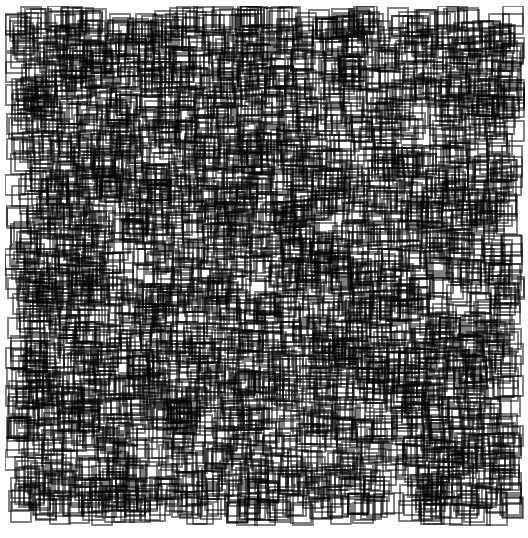

Angular and React
Friends learning from each other
-
 Pascal Precht
@PascalPrecht
Pascal Precht
@PascalPrecht
- Oliver Zeigermann @DJCordhose
Yet another VS talk?
Definitely not.

"Angular 2 is closer to React than it is to AngularJS."
— Oliver Zeigermann
Three Scenarios
- Runtime Performance Tuning - How to make it faster?
- Server-side Rendering - Make it run on the server
- 3rd-Party Library Integration - Render an SVG chart using 3rd-party lib
- Framework Scope - Responsibility. What's inside? What's not?
Example: SVG Boxes
<svg>
<g>
</g>
</svg>
<svg> <g> <rect width="10" height="10" x="..." y="..."> <rect width="10" height="10" x="..." y="..."> <rect width="10" height="10" x="..." y="..."> ... </g> </svg>
function drawBox(box) {
const rect =
document.createElementNS('...', 'rect');
rect.setAttribute('width', 10);
rect.setAttribute('height', 10);
rect.setAttribute('x', box.x);
rect.setAttribute('y', box.y);
...
}
function drawBox(box) { const rect = document.createElementNS('...', 'rect'); rect.setAttribute('width', 10); rect.setAttribute('height', 10); rect.setAttribute('x', box.x); rect.setAttribute('y', box.y); ... }
function drawBox(box) { const rect = document.createElementNS('...', 'rect'); rect.setAttribute('width', 10); rect.setAttribute('height', 10); rect.setAttribute('x', box.x); rect.setAttribute('y', box.y); ... }
function createBoxes(amount) {
for (let i = 0; i < amount; i++) {
const x = getRandomInt(0, 500);
const y = getRandomInt(0, 500);
const box = {
x,
y
};
drawBox(box);
}
}
function createBoxes(amount) { for (let i = 0; i < amount; i++) { const x = getRandomInt(0, 500); const y = getRandomInt(0, 500); const box = { x, y }; drawBox(box); } }
function createBoxes(amount) { for (let i = 0; i < amount; i++) { const x = getRandomInt(0, 500); const y = getRandomInt(0, 500); const box = { x, y }; drawBox(box); } }
function createBoxes(amount) { for (let i = 0; i < amount; i++) { const x = getRandomInt(0, 500); const y = getRandomInt(0, 500); const box = { x, y }; drawBox(box); } }
createBoxes(5000);
svg = document.getElementById('svg');
svg.addEventListener('mousedown', onMouseDown);
svg.addEventListener('mouseup', onMouseUp);
svg.addEventListener('mousemove', onMouseMove);
createBoxes(5000); svg = document.getElementById('svg'); svg.addEventListener('mousedown', onMouseDown); svg.addEventListener('mouseup', onMouseUp); svg.addEventListener('mousemove', onMouseMove);
function onMouseMove(event) {
if (currentBox != null) {
currentBox.setAttribute('x', event.clientX + offsetX);
currentBox.setAttribute('y', event.clientY + offsetY);
}
}function onMouseMove(event) { if (currentBox != null) { currentBox.setAttribute('x', event.clientX + offsetX); currentBox.setAttribute('y', event.clientY + offsetY); } }
Characteristics
The VanillaJS implementation is very fast by default:
- Only one box at a time needs update
- Executes as little code as possible
- No additional (framework) overhead
React
export class App extends React.Component {
}
export class App extends React.Component { constructor() { const boxes = []; // ... create boxes this.state = { boxes: boxes, currentId: null }; } }
export class App extends React.Component { constructor() { const boxes = []; // ... create boxes this.state = { boxes: boxes, currentId: null }; } render() { const {boxes} = this.state; return ( <svg onMouseDown={(event) => this.onMouseDown(event)} onMouseUp={(event) => this.onMouseUp(event)} onMouseMove={(event) => this.onMouseMove(event)}> <g> { boxes.map((box) => <Box box={box}/>) } </g> ); } }
export class App extends React.Component { constructor() { const boxes = []; // ... create boxes this.state = { boxes: boxes, currentId: null }; } render() { const {boxes} = this.state; return ( <svg onMouseDown={(event) => this.onMouseDown(event)} onMouseUp={(event) => this.onMouseUp(event)} onMouseMove={(event) => this.onMouseMove(event)}> <g> { boxes.map((box) => <Box box={box}/>) } </g> ); } }
export class App extends React.Component { constructor() { const boxes = []; // ... create boxes this.state = { boxes: boxes, currentId: null }; } render() { const {boxes} = this.state; return ( <svg onMouseDown={(event) => this.onMouseDown(event)} onMouseUp={(event) => this.onMouseUp(event)} onMouseMove={(event) => this.onMouseMove(event)}> <g> { boxes.map((box) => <Box box={box}/>) } </g> ); } }
export class Box extends React.Component {
render() {
const {box} = this.props;
return <rect width="10" height="10"
x={box.x} y={box.y}/>;
}
}
export class Box extends React.Component { render() { const {box} = this.props; return <rect width="10" height="10" x={box.x} y={box.y}/>; } }
export class Box extends React.Component { render() { const {box} = this.props; return <rect width="10" height="10" x={box.x} y={box.y}/>; } }
onMouseMove(event) {
const {boxes} = this.state;
const box = boxes[this.state.currentId];
box.x = event.clientX + this.offsetX;
box.y = event.clientY + this.offsetY;
this.setState({boxes});
}
onMouseMove(event) { const {boxes} = this.state; const box = boxes[this.state.currentId]; box.x = event.clientX + this.offsetX; box.y = event.clientY + this.offsetY; this.setState({boxes}); }
onMouseMove(event) { const {boxes} = this.state; const box = boxes[this.state.currentId]; box.x = event.clientX + this.offsetX; box.y = event.clientY + this.offsetY; this.setState({boxes}); }
DEMO →
Why slow?
React's change detection happens in Virtual DOM level
- Every mouse move re-renders full application (all boxes)
- Only difference between old and new Virtual DOM affects real DOM
Making it faster
React comes with a component lifecycle hook shouldComponentUpdate()
- Gives us more control over when a component needs to be rendered
- Immutable data structures can speed up model check
export class Box extends React.Component {
render() {
const {box} = this.props;
return <rect width="10" height="10"
x={box.x} y={box.y}/>;
}
}
export class Box extends React.Component { shouldComponentUpdate(nextProps) { return this.props.box !== nextProps.box; } render() { const {box} = this.props; return <rect width="10" height="10" x={box.x} y={box.y}/>; } }
Demo →
Angular
@Component({
template: `
<svg (mousedown)="mouseDown($event)"
(mouseup)="mouseUp($event)"
(mousemove)="mouseMove($event)">
<svg:g square-box
*ngFor="let box of boxes"
[box]="box">
</svg:g>
</svg>
`
})
export class AppComponent implements OnInit {
...
}
@Component({ template: ` <svg (mousedown)="mouseDown($event)" (mouseup)="mouseUp($event)" (mousemove)="mouseMove($event)"> <svg:g square-box *ngFor="let box of boxes" [box]="box"> </svg:g> </svg> ` }) export class AppComponent implements OnInit { ... }
@Component({ template: ` <svg (mousedown)="mouseDown($event)" (mouseup)="mouseUp($event)" (mousemove)="mouseMove($event)"> <svg:g square-box *ngFor="let box of boxes" [box]="box"> </svg:g> </svg> ` }) export class AppComponent implements OnInit { ... }
@Component({ template: ` <svg (mousedown)="mouseDown($event)" (mouseup)="mouseUp($event)" (mousemove)="mouseMove($event)"> <svg:g square-box *ngFor="let box of boxes" [box]="box"> </svg:g> </svg> ` }) export class AppComponent implements OnInit { ... }
@Component({
selector: '[square-box]',
template: `
<svg:rect
[attr.x]="box.x"
[attr.y]="box.y"
width="10"
height="10">
</svg:rect>
`
})
export class BoxComponent {
@Input() box;
}
@Component({ selector: '[square-box]', template: ` <svg:rect [attr.x]="box.x" [attr.y]="box.y" width="10" height="10"> </svg:rect> ` }) export class BoxComponent { @Input() box; }
DEMO →
Observations
- Unoptimized about as fast as React's optimized implementation
- Still slow, Angular checks every component on every event
Can we make it faster?
- OnPush change detection doesn't help here :(
Making it faster
Angular's allows us to control a component's ChangeDetectionStrategy
- Skips subtrees for change detection if set to OnPush and no inputs have changed
- Works great with immutable data structures
@Component({
selector: '[square-box]',
template: `
<svg:rect
[attr.x]="box.x"
[attr.y]="box.y"
width="10"
height="10">
</svg:rect>
`
})
export class BoxComponent {
@Input() box;
}
@Component({ selector: '[square-box]', template: ` <svg:rect [attr.x]="box.x" [attr.y]="box.y" width="10" height="10"> </svg:rect> `, changeDetection: ChangeDetectionStrategy.OnPush }) export class BoxComponent { @Input() box; }
Demo →
Motivations
There are many reasons to render an app on the server, some of them are:
- First-Page-Impressions - Keep the user bei-Laune™
- Preview - When sharing links on Social Media
- SEO - Because web
Bonus: Application code can be shared between client and server!
Challenges
- Universal - Make framework run on the server
- State Transition - Server-side state needs to be transferred to client
const server = express();
app.get('/', (req, res) => {
const html = renderApp(5000);
res.send(html);
});
app.listen(3000, () => console.log('Running...'));const server = express(); app.get('/', (req, res) => { const html = renderApp(5000); res.send(html); }); app.listen(3000, () => console.log('Running...'));
import App from '../common/App';
import { renderToString } from 'react-dom/server';
function renderApp(numberOfBoxes) {
const boxes = createBoxes(numberOfBoxes);
const html = renderToString(<App boxes={boxes}/>);
return renderPage(html, boxes);
}import App from '../common/App'; import { renderToString } from 'react-dom/server'; function renderApp(numberOfBoxes) { const boxes = createBoxes(numberOfBoxes); const html = renderToString(<App boxes={boxes}/>); return renderPage(html, boxes); }
import App from '../common/App'; import { renderToString } from 'react-dom/server'; function renderApp(numberOfBoxes) { const boxes = createBoxes(numberOfBoxes); const html = renderToString(<App boxes={boxes}/>); return renderPage(html, boxes); }
function renderPage(html, data) {
return `
<html>
<body>
<div id="mount">${html}</div>
<script>
window.__INITIAL_STATE__ = ${JSON.stringify(data)};
</script>
<script src="dist/main.js"></script>
</body>
</html>
`;
}function renderPage(html, data) { return ` <html> <body> <div id="mount">${html}</div> <script> window.__INITIAL_STATE__ = ${JSON.stringify(data)}; </script> <script src="dist/main.js"></script> </body> </html> `; }
function renderPage(html, data) { return ` <html> <body> <div id="mount">${html}</div> <script> window.__INITIAL_STATE__ = ${JSON.stringify(data)}; </script> <script src="dist/main.js"></script> </body> </html> `; }
// on the client...
const initialState = window.__INITIAL_STATE__;
const { boxes } = initialState;
const mountNode = document.getElementById('mount');
ReactDOM.render(<App boxes={boxes}/>, mountNode);
// on the client... const initialState = window.__INITIAL_STATE__; const { boxes } = initialState; const mountNode = document.getElementById('mount'); ReactDOM.render(<App boxes={boxes}/>, mountNode);
// on the client... const initialState = window.__INITIAL_STATE__; const { boxes } = initialState; const mountNode = document.getElementById('mount'); ReactDOM.render(<App boxes={boxes}/>, mountNode);
Demo →
// browser.module.ts
import { BrowserModule } from '@angular/platform-browser';
@NgModule({
bootstrap: [AppComponent],
declarations: [AppComponent, SquareBoxComponent],
imports: [BrowserModule]
})
export class AppModule {}// browser.module.ts import { BrowserModule } from '@angular/platform-browser'; @NgModule({ bootstrap: [AppComponent], declarations: [AppComponent, SquareBoxComponent], imports: [BrowserModule] }) export class AppModule {}
// node.module.ts
@NgModule({
bootstrap: [AppComponent],
declarations: [AppComponent, SquareBoxComponent],
imports: []
})
export class AppModule {}// node.module.ts import { CommonModule } from '@angular/common'; import { UniversalModule } from 'angular2-universal/node'; @NgModule({ bootstrap: [AppComponent], declarations: [AppComponent, SquareBoxComponent], imports: [CommonModule, UniversalModule] }) export class AppModule {}
import { createEngine } from 'angular2-express-engine';
import { AppModule } from './app/node.module';
const app = express();
app.engine('.html', createEngine({ ngModule: AppModule });
app.get('/', (req, res) => {
res.render('index', { req, res });
});
import { createEngine } from 'angular2-express-engine'; import { AppModule } from './app/node.module'; const app = express(); app.engine('.html', createEngine({ ngModule: AppModule }); app.get('/', (req, res) => { res.render('index', { req, res }); });
import { createEngine } from 'angular2-express-engine'; import { AppModule } from './app/node.module'; const app = express(); app.engine('.html', createEngine({ ngModule: AppModule }); app.get('/', (req, res) => { res.render('index', { req, res }); });
How to preserve state?
// node.module.ts
@NgModule({
...
providers: [StateService]
})
export class AppModule {
constructor(private state: StateService) {}
universalDoDehydrate = (universalCache) => {
this.state.set('boxes', createBoxes(5000));
const values = this.state.valuesAsJson()
universalCache['StateService'] = JSON.stringify(values);
}
}// node.module.ts @NgModule({ ... providers: [StateService] }) export class AppModule { constructor(private state: StateService) {} universalDoDehydrate = (universalCache) => { this.state.set('boxes', createBoxes(5000)); const values = this.state.valuesAsJson() universalCache['StateService'] = JSON.stringify(values); } }
// node.module.ts @NgModule({ ... providers: [StateService] }) export class AppModule { constructor(private state: StateService) {} universalDoDehydrate = (universalCache) => { this.state.set('boxes', createBoxes(5000)); const values = this.state.valuesAsJson() universalCache['StateService'] = JSON.stringify(values); } }
// node.module.ts @NgModule({ ... providers: [StateService] }) export class AppModule { constructor(private state: StateService) {} universalDoDehydrate = (universalCache) => { this.state.set('boxes', createBoxes(5000)); const values = this.state.valuesAsJson() universalCache['StateService'] = JSON.stringify(values); } }
// node.module.ts @NgModule({ ... providers: [StateService] }) export class AppModule { constructor(private state: StateService) {} universalDoDehydrate = (universalCache) => { this.state.set('boxes', createBoxes(5000)); const values = this.state.valuesAsJson() universalCache['StateService'] = JSON.stringify(values); } }
// browser.module.ts
@NgModule({
...
providers: [StateService]
})
export class AppModule {
constructor(private state: StateService) {
const values = window[UNIVERSAL_CACHE]['StateService'];
this.state.valuesFromJson(values);
}
}// browser.module.ts @NgModule({ ... providers: [StateService] }) export class AppModule { constructor(private state: StateService) { const values = window[UNIVERSAL_CACHE]['StateService']; this.state.valuesFromJson(values); } }
// browser.module.ts @NgModule({ ... providers: [StateService] }) export class AppModule { constructor(private state: StateService) { const values = window[UNIVERSAL_CACHE]['StateService']; this.state.valuesFromJson(values); } }
@Component({...})
export class AppComponent {
boxes = [];
constructor(private state: StateService) {}
ngOnInit() {
this.boxes = state.get('boxes');
}
}@Component({...}) export class AppComponent { boxes = []; constructor(private state: StateService) {} ngOnInit() { this.boxes = state.get('boxes'); } }
Demo →
Conclusion
- Number one
- Number two